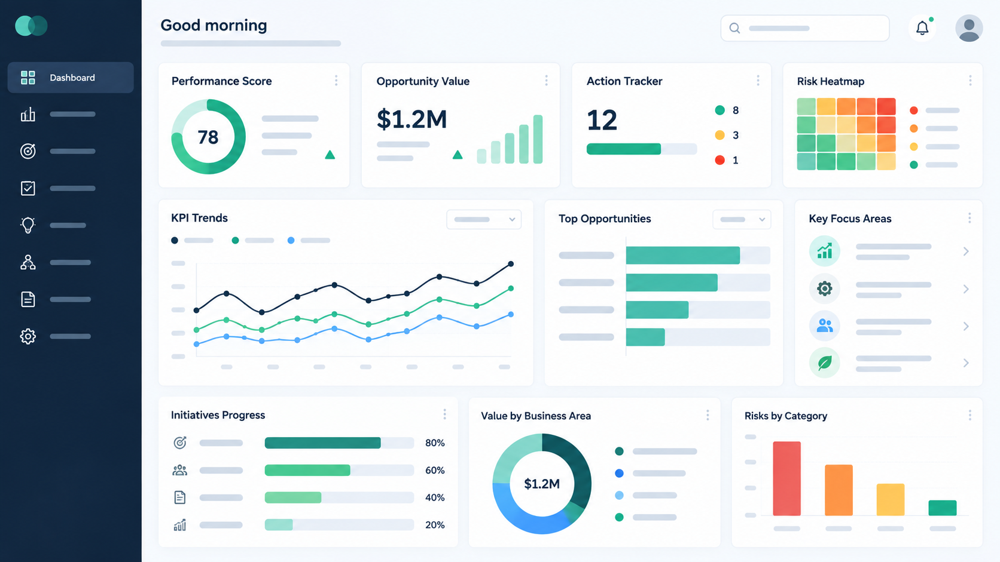

⚙
Operations
Productivity, capacity, flow, bottlenecks, utilization and output stability.
JAGVORA helps leaders diagnose performance gaps, quantify their business and financial impact, prioritize practical actions and track verified results.
Costs rising?
Productivity low?
Defects increasing?
Inventory too high?
Downtime hurting output?
Not sure where money is being lost?
We look beyond departmental boundaries to connect operational issues with cost, capacity, cash, customer, risk and growth outcomes.
Productivity, capacity, flow, bottlenecks, utilization and output stability.
Defects, rework, COPQ, complaints, RCA, CAPA and process control.
Downtime, MTBF, MTTR, preventive maintenance and asset effectiveness.
Planning, inventory, shortages, supplier performance, logistics and lead time.
Waste removal, standardization, Lean, Six Sigma and continuous improvement.
KPI systems, dashboards, automation, data quality and decision intelligence.
We do not begin with a solution. We build traceability from the business problem to the evidence, action and measurable outcome.
Context, goals, pain points
Baseline, gaps, evidence
Patterns & root causes
Cost, cash, capacity, risk
Prioritized owned actions
Actual measured benefit
The JAGVORA Health Check assesses ten dimensions and converts observations into a structured maturity view. It is a diagnostic indicator — not a certification.
Business Health Check, OEE, COPQ, capacity, reliability and ROI calculators.
Start here →Evidence review, gap map, root-cause analysis, opportunity value and 90-day plan.
Focused implementation support across performance, quality, reliability and process improvement.
Problem solving, KPI systems, Lean/Six Sigma foundations and internal improvement capability.
JAGVORA’s longer-term platform vision connects business health, opportunity prioritization, action ownership and benefits verification — with responsible AI supporting, not replacing, human judgment.

Illustrative future-state conceptBusiness improvement depends on trust. JAGVORA is designed around clear assumptions, minimum necessary data, controlled client information and human-reviewed high-impact recommendations.
Collect only what is needed for the agreed purpose.
Separate facts, calculations, assumptions and recommendations.
Distinguish potential opportunity from verified realized benefit.
High-impact recommendations remain subject to professional judgment.
Our methodology is informed by recognized quality, risk, information-security, AI-governance, excellence and improvement frameworks. Alignment does not mean certification.
Use the Business Excellence Health Check to establish a baseline and decide whether a deeper diagnostic is justified.
Contact: jagadishearna@gmail.com
Replace the placeholder email with your official JAGVORA address before publishing.